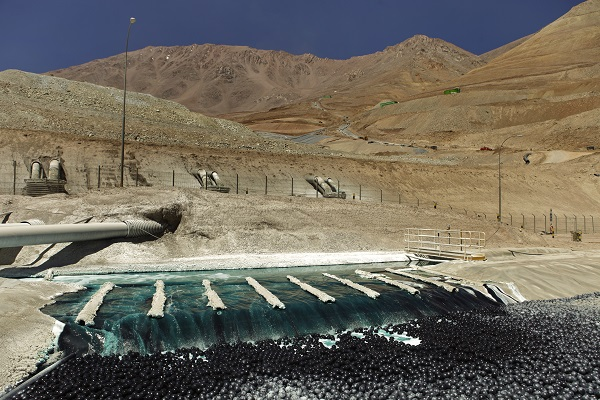

O processo tem como objetivo a dissolução de metais através de um ataque ácido e básico; e tem também a vantagem de economizar energia e ter a menor poluição do meio ambiente. Nesse processo é empregado a lixiviação que transfere um componente na fase sólida para a fase líquida atráves da solubilização. A fase líquida pode ser uma solução ácida ou alcalina e também pode ser usada a lixiviação bacteriana.
